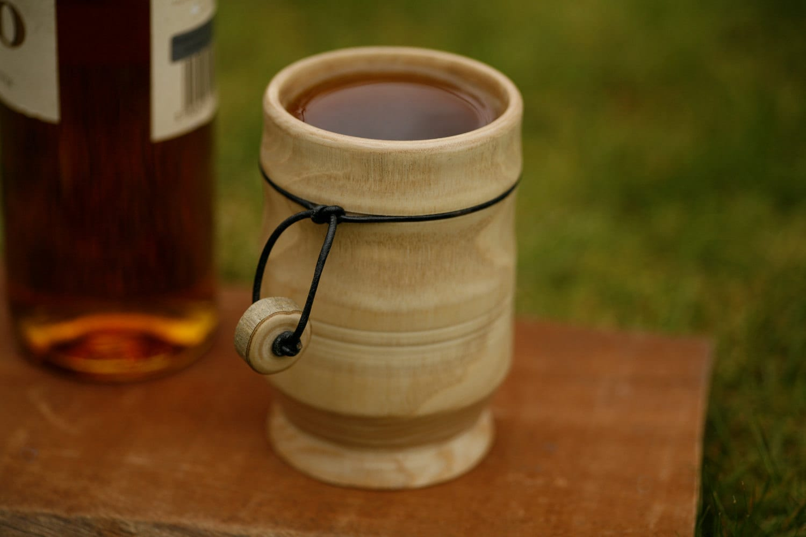

Today, brewers can easily buy packaged yeast and yeast nutrients from grocery stores. Vikings, on the other hand, did not have this luxury. In fact, during their time, they didn’t even know what yeast was and that they needed it to make their mead. They could have drawn wild yeast from the raw honey, fruits, and herbs to their mead must, initiating fermentation without realizing it.
Here is a mead starter recipe by Jereme Zimmerman—a writer and traditional brewing revivalist who advocates natural and holistic home brewing. This mead starter, as the name suggests, can help in instigating fermentation in your wild mead. You can use it as a replacement for store- bought yeast and brew your mead just like a Viking.